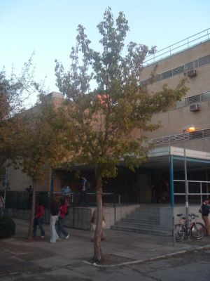
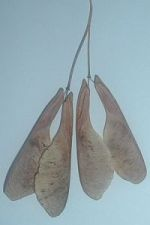
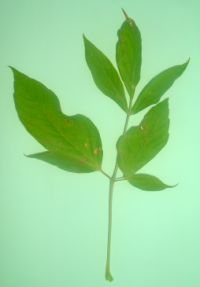

Flora ornamental del Campus de Reina Mercedes, Universidad de Sevilla - Ficha nº 31 - Versión 1*
|
Acer negundo L., Sp.
Pl. 1056 (1753) |
|
|
Arce negundo, bordo, arce americano, arce de hojas de fresno |
Árbol caducifolio |
|
Árbol
caducifolio, dioico, de 5
Hojas opuestas, imparipinnadas, con 3-7 folíolos; pecíolo largo y delgado; folíolos 6– Inflorescencias
en forma de racimillos
colgantes de color verde amarillento.
Flores unisexuales, largamente pediceladas;
cáliz con 4 sépalos
soldados en la base; corola ausente; las
masculinas con 4
estambres, y las femeninas con
2 carpelos
y 2 estilos.
Fruto disamara
(doble sámara), de 2-
Florece en primavera, antes o al mismo tiempo del nacimiento de las hojas, y fructifica en septiembre-octubre. |
 |
|
  Fotos: Carlos Antonietty 2005 |
Observaciones:
El nombre genérico es el nombre latino del arce.
El
específico parece que proviene de la palabra
sánscrita nurgundi,
usada para designar un árbol de hojas similares (Vitex
negundo). |
|
Área
de origen.- Centro y Este de
los Estados Unidos y Canadá,
llega
por el
sur hasta México y
Guatemala.
Se
cultiva en Europa desde finales del s. XVIII,
cuando fue traído
por el almirante La Galligonniere. |
|
|
Uso en el campus: 3 ejemplares alineados como árboles de sombra. |
Localización:
Zona
central
del Campus |
|
(1) G.López González (1982). La guia Incafo de los Árboles y Arbustos de la Península Ibérica. |
|
|
© Rafael Caro Mancilla (XII/2005) & Carlos Romero Zarco (XII/2006) |
|